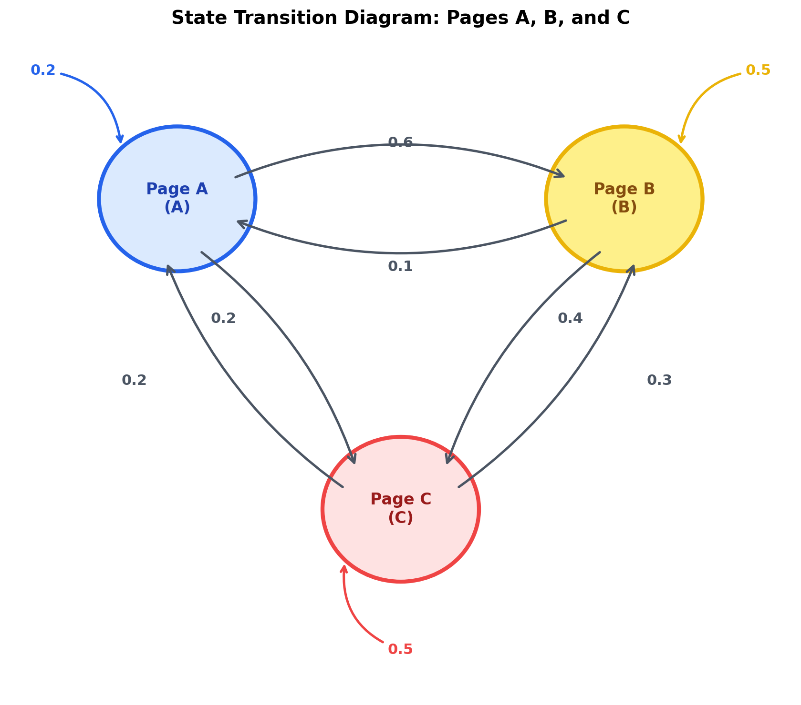

Markov Chains#
A Markov Chain is a stochastic process that models a sequence of events where the probability of each event depends only on the state attained in the previous event. In Machine Learning, Markov Chains are the foundation for models like Markov Decision Processes (MDPs) in Reinforcement Learning, Hidden Markov Models (HMMs) in speech processing, and PageRank in web search.
1. The Markov Property#
A discrete-time stochastic process \(\{X_0, X_1, X_2, \dots\}\) has the Markov Property (or memoryless property) if the conditional probability distribution of future states depends only upon the present state, not on the path of past states:
In plain terms: “The future depends only on the present, not on the past.”
2. Transition Matrix (\(P\))#
If a system has \(n\) distinct states, we define the probability of transitioning from state \(i\) to state \(j\) as \(P_{ij}\). We can group these probabilities into an \(n \times n\) matrix called the Transition Matrix (or Stochastic Matrix):
Important Properties of \(P\)#
Non-negativity: Every element is a probability, so \(P_{ij} \ge 0\).
Sum of Outgoing Probabilities: The sum of probabilities in each row (representing transitions from a given state to all possible next states, including itself) must equal 1:
\[\sum_{j} P_{ij} = 1 \quad \forall i\]
3. State Transition Diagrams#
A Markov Chain can be represented as a directed graph where nodes are states and edges represent transition probabilities.

Fig. 17 State transition diagram for a three-state web browsing model (Pages A, B, and C).#
In the web browsing model above, the transition matrix is defined as:
Rows represent the starting page.
Columns represent the destination page.
Sum Rule check (Row A): \(P_{AA} + P_{AB} + P_{AC} = 0.2 + 0.6 + 0.2 = 1.0\).
4. State Vector Update over Time#
Let \(\pi^{(t)}\) be a row vector representing the probability distribution of the system’s states at time \(t\):
To compute the probability distribution at the next time step, we perform a vector-matrix multiplication:
By induction, the state probability vector after \(k\) steps is:
Multi-Step Calculation Example#
Suppose a user starts browsing and is definitely on Page B at \(t = 0\):
At step 1 (\(t = 1\)):
\[\begin{split}\pi^{(1)} = \pi^{(0)} P = \begin{bmatrix} 0 & 1 & 0 \end{bmatrix} \begin{bmatrix} 0.2 & 0.6 & 0.2 \\ 0.1 & 0.5 & 0.4 \\ 0.2 & 0.3 & 0.5 \end{bmatrix} = \begin{bmatrix} 0.1 & 0.5 & 0.4 \end{bmatrix}\end{split}\]
5. Stationary Distribution (\(\pi\))#
As \(t \to \infty\), many Markov Chains reach a steady state where the probability distribution across states no longer changes. This limiting distribution is called the Stationary Distribution (\(\pi\)):
Or represented as a linear system:
Analytical Solution#
To find a unique probability vector, we must combine the system of equations with the Normalization Constraint (since the sum of all state probabilities must equal 1):
Expanding the matrix multiplication \(\pi P = \pi\), we get:
\(0.2 \pi_A + 0.1 \pi_B + 0.2 \pi_C = \pi_A \implies 0.1 \pi_B + 0.2 \pi_C = 0.8 \pi_A \implies \pi_B + 2\pi_C = 8\pi_A\)
\(0.6 \pi_A + 0.5 \pi_B + 0.3 \pi_C = \pi_B \implies 0.6 \pi_A + 0.3 \pi_C = 0.5 \pi_B\)
From (1), we express \(\pi_B = 8\pi_A - 2\pi_C\). Substituting this into (2):
Substituting \(\pi_C\) back to find \(\pi_B\):
Using the normalization constraint \(\pi_A + \pi_B + \pi_C = 1\):
Solving for the rest of the states:
Thus, the stationary distribution is:
Note
Note on Convergence (Ergodicity): A Markov Chain is guaranteed to converge to a unique stationary distribution regardless of the initial starting state \(\pi^{(0)}\) if the chain is Ergodic. An ergodic Markov Chain must be:
Irreducible: It is possible to get from any state to any other state (all states communicate).
Aperiodic: The return times to any state do not follow a fixed periodic cycle.
6. Eigenvalues and Eigenvectors Connection#
In Linear Algebra, the eigenvector equation for a square matrix \(M\) is:
Comparing this to our stationary distribution equation \(\pi P = \pi\), we find that:
The stationary distribution vector \(\pi\) is the Left Eigenvector of the transition matrix \(P\).
The corresponding Eigenvalue is \(\lambda = 1\).
In any stochastic transition matrix, the largest eigenvalue is always \(1\), guaranteeing the existence of a stationary distribution.
7. Python Implementation (NumPy)#
We can simulate state transitions and solve for the stationary distribution using Python:
import numpy as np
# Define Transition Matrix P
P = np.array([
[0.2, 0.6, 0.2],
[0.1, 0.5, 0.4],
[0.2, 0.3, 0.5]
])
# 1. Simulation over 15 steps starting from Page B: [0.0, 1.0, 0.0]
v = np.array([0.0, 1.0, 0.0])
for step in range(1, 16):
v = v.dot(P)
if step in [1, 2, 5, 10, 15]:
print(f"Step {step:02d} Probabilities: A = {v[0]:.4f}, B = {v[1]:.4f}, C = {v[2]:.4f}")
# 2. Solving for Stationary Distribution analytically using Eigenvectors
# Since \pi P = \pi is equivalent to P^T \pi^T = \pi^T,
# \pi^T is the right eigenvector of P^T associated with eigenvalue 1.
eigenvalues, eigenvectors = np.linalg.eig(P.T)
# Find the eigenvector corresponding to eigenvalue 1.0
idx = np.argmin(np.abs(eigenvalues - 1.0))
stationary = eigenvectors[:, idx].real
# Normalize the eigenvector to sum to 1
stationary = stationary / np.sum(stationary)
print(f"\nStationary Distribution: A = {stationary[0]:.4f}, B = {stationary[1]:.4f}, C = {stationary[2]:.4f}")
8. Application: Google PageRank Algorithm#
PageRank models a “Random Surfer” who clicks on links on the web.
To prevent the surfer from getting trapped in pages with no outgoing links (dead ends) or circular loops, PageRank introduces a Damping Factor (\(d \approx 0.85\)):
With probability \(d\), the surfer clicks a random link on the current page.
With probability \(1 - d\), the surfer gets bored and jumps to a completely random page on the entire web.
Mathematical Formulation#
Given an adjacency matrix \(A\) where \(A_{ij} = 1\) if page \(i\) links to page \(j\), we construct a transition probability matrix \(M\) where \(M_{ij} = \frac{A_{ij}}{\text{out-degree}(i)}\).
The PageRank Google Matrix \(G\) is defined as:
where \(N\) is the total number of pages and \(\mathbf{E}\) is an \(N \times N\) matrix of all ones.
Python Simulation: PageRank Calculation#
Here is how to calculate PageRank scores for a 4-page web graph using NumPy and NetworkX:
import numpy as np
import networkx as nx
# 1. Define Web Graph Structure (4 Pages: A, B, C, D)
# Directed links: A -> B, A -> C, B -> D, C -> A, C -> B, C -> D, D -> C
edges = [('A', 'B'), ('A', 'C'), ('B', 'D'), ('C', 'A'), ('C', 'B'), ('C', 'D'), ('D', 'C')]
nodes = ['A', 'B', 'C', 'D']
N = len(nodes)
# 2. Build Transition Matrix M
# M[i, j] = probability of moving from node i to node j
M = np.zeros((N, N))
node_to_idx = {node: i for i, node in enumerate(nodes)}
for u, v in edges:
M[node_to_idx[u], node_to_idx[v]] = 1
# Normalize rows so each row sums to 1
row_sums = M.sum(axis=1, keepdims=True)
M = M / row_sums
# 3. Apply Damping Factor (d = 0.85) to create Google Matrix G
d = 0.85
E = np.ones((N, N))
G = d * M + ((1 - d) / N) * E
# 4. Power Iteration Method to find Stationary Distribution
pagerank = np.ones(N) / N # Initial uniform distribution
for step in range(100):
pagerank = pagerank.dot(G)
print("PageRank Scores (Power Iteration):")
for node, score in zip(nodes, pagerank):
print(f"Page {node}: {score:.4f}")
# 5. Verification using NetworkX library
G_nx = nx.DiGraph(edges)
pr_nx = nx.pagerank(G_nx, alpha=0.85)
print("\nPageRank Scores (NetworkX Verification):")
for node, score in sorted(pr_nx.items()):
print(f"Page {node}: {score:.4f}")